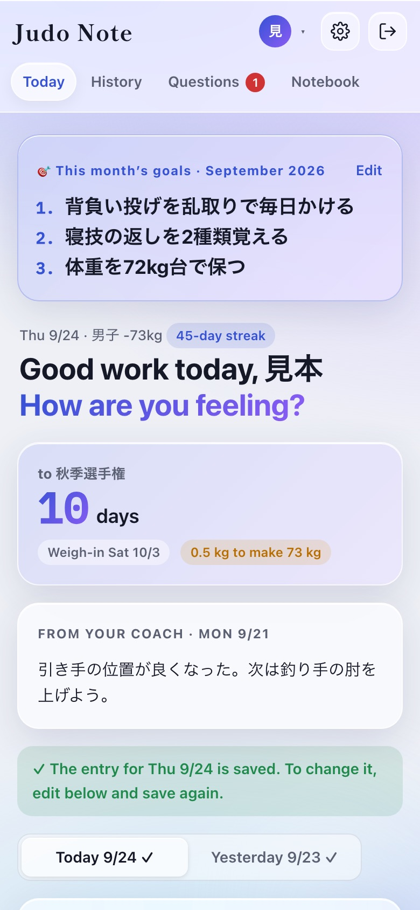
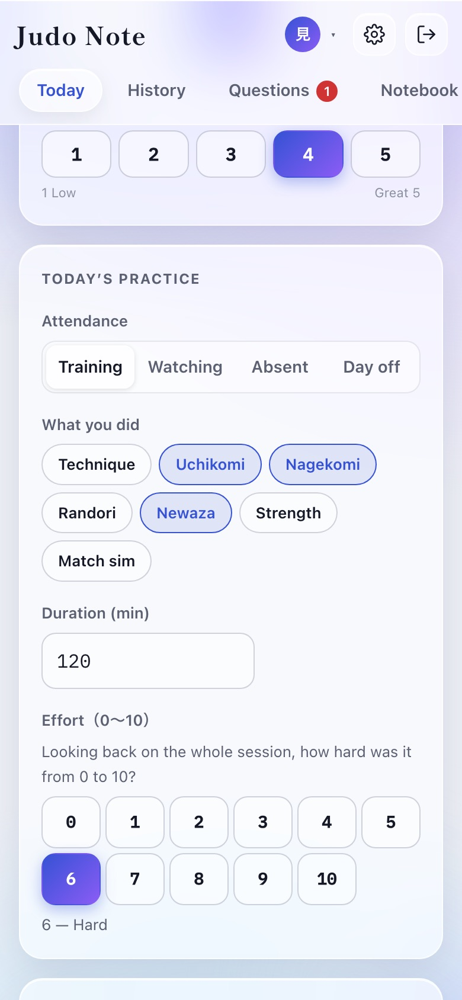
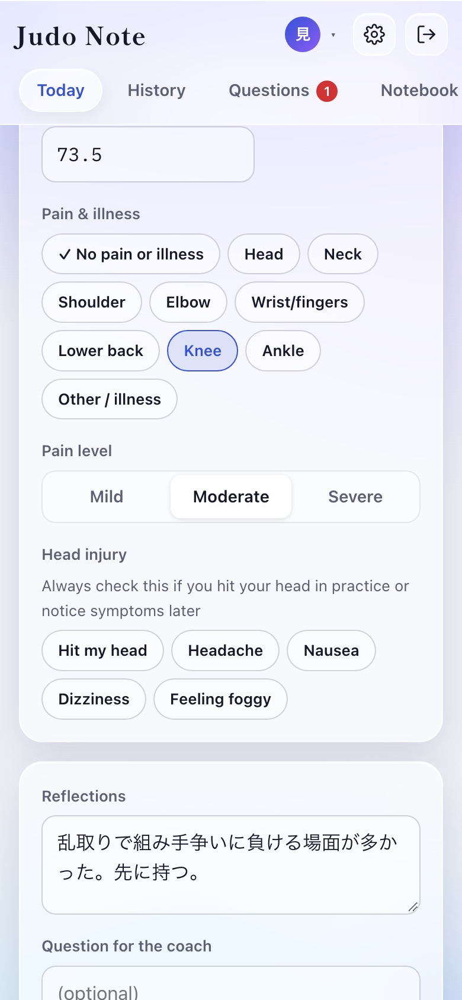
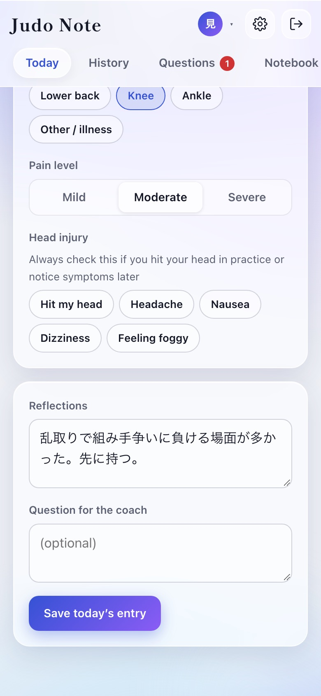
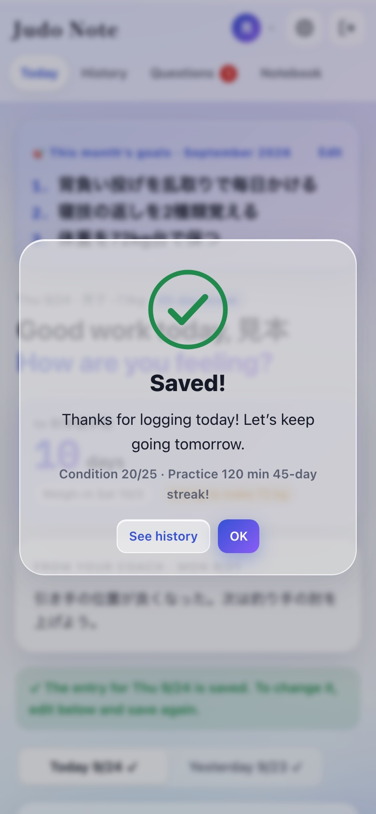
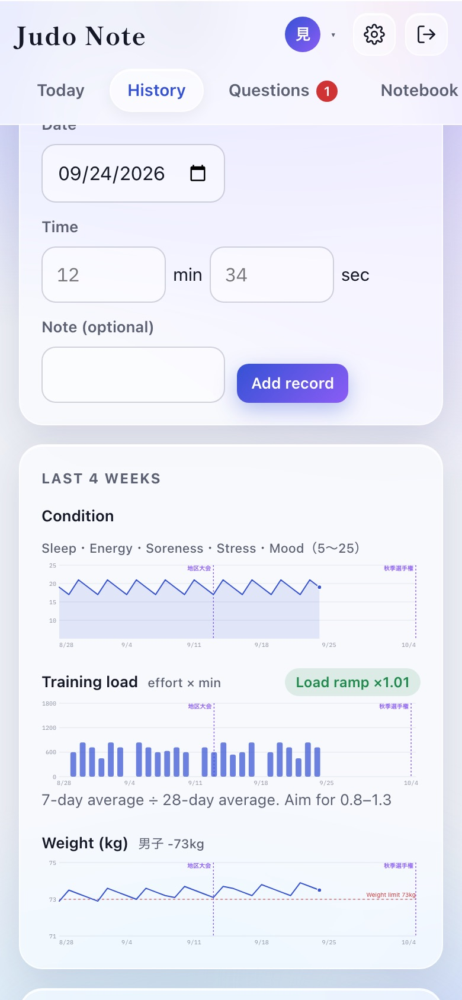
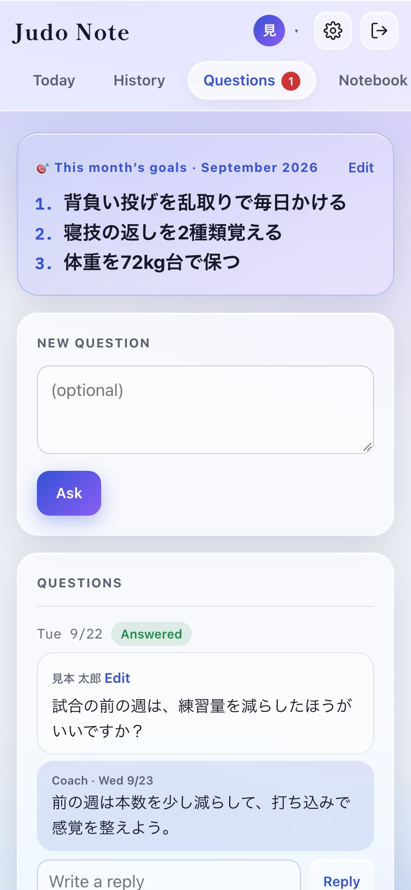
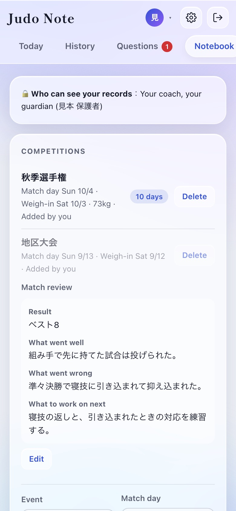
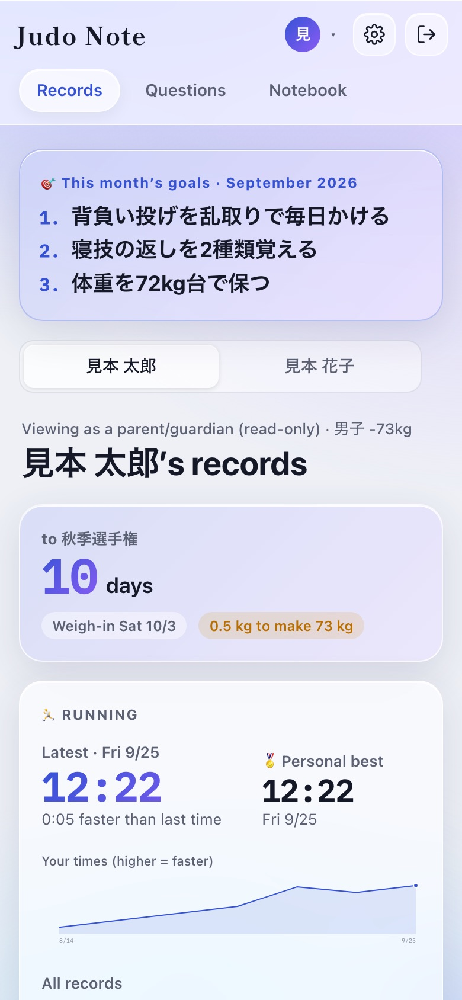
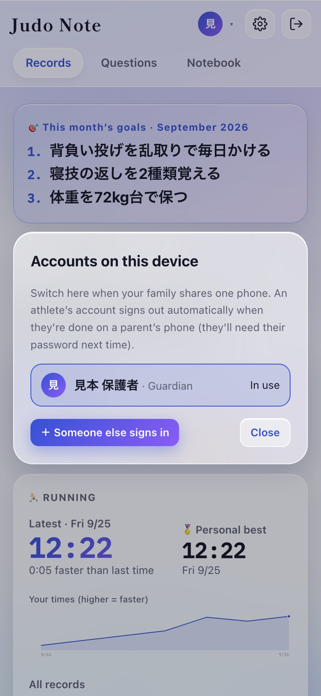

An app where you log your daily condition, how practice went, your weight, injuries and questions — and share them with your coach. Your entries turn into charts, and each month becomes a printable notebook.
🔒 Only you, your coach and (if registered) your parent/guardian can see your records. Other athletes, their families and even your siblings can’t.
02Getting started (once)
Open the invite link from your coach It arrives by text message or a messaging app. No link? Open the app, tap “Join with invite code” and enter the 8-character code.
Enter your name, ID, password and weight class, then tap “Create account” Choose your own ID (3–20 lowercase letters or numbers) and a password of 8+ characters. Save the password on your phone when it asks.
Under 18? Talk to your parent/guardian first, then enter their name and tick the consent box.
Add it to your Home Screen iPhone: Safari → Share → Add to Home Screen. Android: Chrome menu → Add to Home screen.
Turn on notifications (recommended) Gear icon → 🔔 Get notifications on this device → Allow. Once a day (9 pm at first) you get a reminder if you haven’t logged.
03Finding your way
Four tabs at the top:
Today: log the day
History: charts, running and past entries
Extra: training you did on your own, outside practice
Questions: ask your coach and read replies
Notebook: monthly goals, matches and reviews, the monthly booklet
Your goals for the month always sit at the top. Below them is your 🔥 streak: how many days in a row you’ve logged, a ✓ for each day this week, and your best so far. Upcoming matches (“10 days to …”) and your coach’s latest comment appear there too.
If you see “Notifications are off on this device”, tap 🔔 Get notifications on this device.

Today tab
04Logging each day
After practice, fill in the “Today” tab. It takes a minute or two.

Attendance, practice, effort

Weight, pain, head injury

Reflections, question, save
Item
How to fill it in
Condition
Sleep, energy, soreness, stress and mood from 1 to 5 (5 is best).
Attendance
Training, watching, absent or day off. If absent, pick the reason.
What you did
Tick everything: technique, uchikomi, nagekomi, randori, newaza, strength, match sim.
Duration and effort
Minutes, and how hard the whole session was from 0 to 10 (0 = rest, 10 = maximal).
Weight
Today’s weight. Tap kg｜lb next to it to switch units (the number you typed is converted). Charts and history use the unit you chose.
Pain & illness
Leave ✓ No pain or illness if you’re fine. Otherwise pick the body part and level. Colds, stomach aches etc. go in “Other / illness”.
Head injury
Always tick this if you hit your head or have a headache, nausea, dizziness or feel foggy. It’s flagged in red at the top of your coach’s screen. Don’t train while you have symptoms and see a doctor.
Reflections
What worked, what to fix, what to focus on next — and how you felt (happy, frustrated, proud…). It helps when you read it back later. Short is fine.
Question for the coach
Optional.
Finally tap Save today’s entry. The button shows “Saving…”, then a ✓ “Saved!” card with a message appears — that means your coach has it.
Above that day’s form you’ll see “✓ The entry for … is saved”. Questions, runs, goals and reviews also show a ✓ when they’re saved.

When your entry is saved
If the signal is too weak to save, your entry stays on your phone — tap Save again later.
05Forgot to log / fixing mistakes
Forgot? Log it before your next practice: tap Yesterday at the top of the Today tab.
Wrong entry? Today’s and yesterday’s entries can be changed — pick the day, fix it and save again.
Wrong question? Tap Edit next to your name on the message (it shows “edited”).
06History, running and extra training
Running
After a timed run on the usual course, enter the date and time (min, sec) and tap Add record. No distance needed.
You see your latest time and how much faster or slower it was than last time.
🏅 marks your personal best. Every past record is listed.
In the chart, higher means faster.
Charts
Switch the period with Week｜Month｜3 Mo｜All at the top (like the iPhone Health app). Swipe a chart left or right, or tap ‹ ›, to go back to earlier weeks or months.
Each chart shows a big average or total with a comparison (“vs last week +1.2”), and “Highlights” at the top sums up the period. Tap a bar to see that day (hold and slide to move between days). Match days show a 🥋 dotted line. Switch weight between kg and lb.
Each day in “Recent entries” shows 📝 when you logged it (and when you last edited it).

History tab
💪 Extra training (outside practice)
If you train on your own outside judo practice — at home, at school, anywhere — log it in the Extra tab.
Pick the date (you can add earlier days later, too).
Enter each exercise and the reps / time (e.g. Push-ups / 3 × 15). Tap a quick pick to fill it in. Need more rows? Tap + Add exercise.
Time and note are optional. Tap Save and you’ll see a ✓.
Log as many times a day as you like (morning and evening, for example).
What you log shows with 💪 under that day in History, and in your monthly booklet.
Made a mistake? Use Edit or Delete in the Extra tab list.
Your coach and parents can see it (other athletes can’t). Your coach isn’t notified.
07Asking your coach
Write on the “Questions” tab and tap Ask (or use “Question for the coach” when logging). A number on the tab tells you a reply has arrived, and you can reply back. Your parent/guardian can read these conversations too.

Questions tab
08Notebook: goals, matches, booklet
🎬 Videos at the top shows practice and match videos your parents or coach shared. Tap ▶ Watch to play or ⬇ Download to save. New videos also show a notice on the Today screen.
Goals for the month
Set up to three at the start of each month and tap Save goals. They stay at the top of your screen. You can also write a monthly review (it goes in the booklet).
Matches
Add the event name, match day, weigh-in and target weight. The Today tab then shows “N days to …” and how far you are from your target weight.
Match review
You can write it from match day: on the Today tab tap ✍️ Write your match review and fill in the result, what went well, what went wrong and what to work on. You can add past matches too.

Notebook tab
09Month-end summary
On the last evening of the month you get “📘 Your … summary is ready”. The Notebook tab shows that month’s booklet (cover, calendar, daily log, match reviews, conversations with your coach and space to write by hand). Print it with Print / save as PDF.
10Notifications and settings
Use the gear icon. Changes only affect your own screen: language (日本語 / English), theme color, appearance (auto / light / dark) and weight unit (kg / lb), the daily reminder time (9 pm at first; any half hour from 6 am to 11:30 pm, or off — it follows your phone’s time zone). Your parent/guardian gets a reminder at noon the next day, only if you still haven’t logged the day before.
11No phone? Use a parent’s phone
Open Judo Note on your parent’s phone and tap the name at the top.
Tap ＋ Someone else signs in and sign in with your own ID and password.
When you’re done, tap the name again and choose your parent.
Switching back signs you out automatically, so siblings using the same phone can’t see your records. Next time just enter your password (your ID is remembered).
12Troubleshooting
If…
Do this
You forgot your ID or password
Tell your coach — they can set a new password.
No notifications
Open from the Home Screen icon, check notifications are on in the gear menu, then try “Send a test”.
The screen looks zoomed in or out of date
Close the app and open it again.
Something behaves strangely
Take a screenshot and send it to your coach with what you did and when.
You get a read-only account to follow your child’s training (free — you can’t change anything):
Daily condition, practice log, weight, pain or illness
Comments from the coach and their questions and replies
Monthly goals, matches and match reviews, running times, extra training outside practice
A monthly summary you can print as a booklet
02Signing up
After your child has signed up, the coach sends you a guardian invite link.
Open it — it says you’re registering as your child’s guardian. Choose your name, ID and password and tap Create account.
In Safari tap Share → Add to Home Screen to open it like an app.
03Two or more children
The coach sends one guardian link per child.
Sign up with the first link as above.
Open the second link and use “Already registered as a guardian?” at the bottom: sign in with the same ID and password and tap Sign in and add. (Don’t use the new sign-up form.)
Switch between your children with one tap at the top of the screen.
Your children can’t see each other’s records — only you can.
04Both parents on their own phones
Ask the coach for one guardian link per parent and each sign up with your own ID. You can also use one account on two phones.
05Finding your way
Records: monthly goals, days to the next match, running, charts, daily entries and the coach’s comments (plus 💪 extra training on days your child did any)
Questions: your child’s conversations with the coach
Notebook: matches and reviews, goals, the monthly booklet (Print / save as PDF)
Pain and head injuries appear on that day’s entry. A head injury is also flagged in red at the top of the coach’s screen.
🔥 shows how many days in a row your child has logged, and each day shows 📝 when it was logged. Tap kg｜lb to switch weight units (also in the gear settings).

Guardian view (switch children at the top)
🎬 Sharing videos
You can share practice and match videos with your child and the coach. Only your child, their parents and the coach can see them.
Open the Videos tab → ＋ Add a video.
Tap Choose a video, pick one from your Photos, add the date and a title (e.g. Fall Open, round 1), then tap Upload.
You’ll see “Making the video smaller…” then “Uploading…”. Keep the screen open until it finishes (about a minute for a 5-minute video).
To keep the app free, the video is made smaller on your phone before it’s sent. Longer videos get slightly lower quality (about 480–720p for 5 minutes). Videos up to 20 minutes are supported.
The whole team can store about 1 GB (roughly 25 five-minute videos). When it’s full, the coach deletes older ones.
Tap ▶ Watch to play or ⬇ Download to save it to your phone. You can delete videos you uploaded.
06If your child has no phone
On your phone, tap your name at the top.
Tap ＋ Someone else signs in and let your child sign in with their own ID and password.
When they’re done, tap the name and choose yours — no password needed to switch back.
Switching back signs your child out automatically, so siblings sharing the phone can’t see each other’s records. One phone can receive notifications for you and all your children (each shows the child’s name).

Accounts on this device
Notifications (recommended)
Open from the Home Screen icon → gear icon → 🔔 Get notifications on this device. You get a reminder at noon the next day, only if your child hasn’t logged the previous day (athletes may log a day late, before their next practice). Change the time under “Reminder time”.
07Privacy
Only your child, the coach and you can see the records. Nothing — including weight — is shared with other athletes, families or siblings.
You see the same questions, replies and comments your child does.
Athletes under 18 need a guardian’s name and consent to sign up.
When an athlete graduates or leaves, the coach deletes the records or gives them to you as a PDF.
08Troubleshooting
If…
Do this
You forgot your ID or password
Contact the coach — they can set a new password.
Your second child doesn’t appear
Open the second link and sign in with the same ID under “Already registered as a guardian?”.